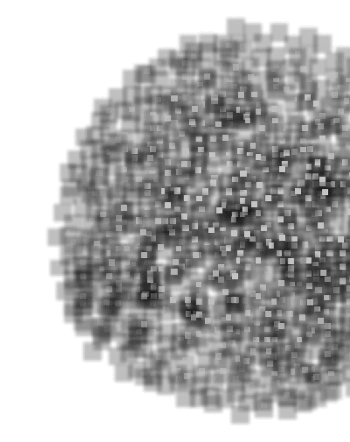

SOM | 建筑的力量
×
张雅欣 胡伊涵
本作品选择了获奖数量最多的SOM建筑事务所进行研究，通过分类和重组创造出了适用于其他建筑事务所的信息检索网站，可供社会各界对建筑感兴趣的人进行查询和获取信息。比起目无章法的百度或者随意的搜索，根据需求来选择工具，有系统的搜索资料效率更高。
探索项目
设计以美，建筑以真
唐雅琪
返回
功能主义的先行者
樊嘉琦
返回

SOM | 建筑的力量
胡伊涵 张雅欣
返回
Pull啦
我好美
中国现存古塔建筑样式
张璇 谢玉婷
返回
云集的建筑
吴晓彤 许娇娇
返回
碑刻千年
王雅玲 王心玥
返回
京杭大运河的文化碎片
周凌旭 承璐
返回

发现毕加索
承珂冰 裴昕宇
返回
消失的婴儿潮
顾硕
返回
迷失的家园
庄诗睿
返回
人类末日学说
潘玥
返回
谁动了我的食物？
朱亦然
返回
梦境投射
陈静 徐巧颖
返回
被“圈住”的交际圈
谈砚
返回
“老番茄”视频数据可视化
周晨菲
返回